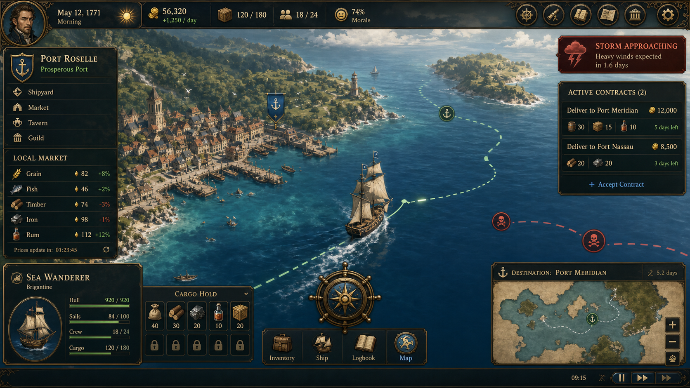

Pioneer 기획서
플레이 미리보기
플레이 미리보기

개요
Pioneer는 대항해시대를 배경으로 항구를 오가며 자원을 사고팔고, 선박과 승무원을 성장시키는 항해 경영 게임이다. 플레이어는 지도에서 배와 목적지를 선택하고, 시장 가격·화물·승무원·일일 목표를 관리하며 무역 루프를 확장한다.
이번 변경 사항
- 거래소 통합: 항구의 시장 창에서 시세 변동 차트와 물품 매입·판매를 한 번에 처리하도록 통합했다.
- 분할형 거래 UI: 왼쪽 상단에는 선택 물품의 시세 차트·최고/최저가·수수료를, 왼쪽 하단에는 거래 조작부를, 오른쪽에는 물품 목록·보유량·변동률을 배치했다.
- 구매/판매 UX 폴리싱: 수량 스텝퍼, 빠른 수량 버튼, 예상 거래액이 보이는 대형 매입/판매 CTA를 추가했다.
- 거래 판단 보조: 선택 물품의 현재 흐름에 따라 매입/판매 후보 안내를 표시하고, 거래 후 금화와 화물량 변화를 미리 보여준다.
- 물품 목록 강조: 구매 가능하거나 판매 가능한 물품을 목록 상단에 우선 정렬하고, 보유량·매입가·판매가·거래 가능 배지를 더 선명하게 표시한다.
- 거래소 딤드 완화: 거래소 팝업 뒤 배경 어둡기를 낮춰 지도 맥락이 과하게 사라지지 않도록 조정했다.
- 재화 표현 통일: 금화와 보석을 동일한 크기·테두리·숫자 체계의 통화 배지로 정리해 HUD와 주요 소모 버튼의 시각 언어를 맞췄다.
- 항구 해금 UX: 시작 시 리스본 주변의 일부 유럽 항구를 항해 가능 상태로 열어두고, 잠긴 항구는 지도 라벨과 로그에서 필요한 누적 판매금 조건을 표시한다.
- 상시 조언 바: 초반 튜토리얼 단계가 끝나거나 숨겨진 뒤에도 상단 조언 바가 배 선택, 목적지 선택, 판매, 구매, 항로 해금, 항해 추적 같은 다음 행동을 계속 안내한다.
- 초반 화물 밸런스: 시작 선박을 대형 상인선에서 소형 통통배로 낮추고, 시작 양털을 8개로 줄여 초반 화물 관리가 더 명확하게 느껴지도록 조정했다.
- 화물 인벤토리 UI: 지도 하단 화물창과 우측 화물 탭을 슬롯형 인벤토리로 통일해 보유 스택, 빈 슬롯, 예상 판매액을 일반적인 게임 보관함처럼 확인할 수 있게 했다.
- 거래 수수료 고정: 매입에는 수수료를 붙이지 않고, 판매 시에만 승무원 스탯과 무관하게 10% 수수료를 적용한다.
- 항로 선택 조작 정리: 항구 클릭은 항구 정보/시장 확인으로만 처리하고, 항로 지정은 화면에 보이는 배 아이콘 또는 함대 목록에서 배를 먼저 선택한 뒤 목적지 항구를 누르는 방식으로 제한한다.
- 배 중심 목적지 선택: 지도 위 배 아이콘을 직접 클릭하면 해당 배가 선택되고 곧바로 목적지 선택 모드로 들어가며, 항구 클릭만으로는 항로 모드가 시작되지 않는다.
- 목적지 확정형 항로 선택: 배를 선택해 목적지 지정 모드에 들어간 상태에서 항구를 누르면 먼저 해당 항구의 시세창을 보여주고, 시세창의 [목적지 확정] 버튼을 눌렀을 때 출항하도록 바꿨다.
- 정박 항구 클릭 분리: 현재 정박 중인 항구를 누르면 거래소만 열고 시세 팝업을 닫으며, 정박 중이지 않은 방문 항구를 누르면 거래소를 닫고 시세만 보여준다.
- 레이아웃 겹침 완화: 상단 HUD는 줄바꿈 가능한 폭으로 제한하고, 조언 바·목적지 안내·지도 버튼·화물 미니창·항구 해금 라벨이 서로 겹치지 않도록 높이와 위치를 분리했다.
- 거래소 레이아웃 안정화: 물품 목록과 거래 조작부의 최소/최대 폭을 조정하고 하단 액션 버튼을 줄바꿈 가능하게 만들어 좁은 화면에서도 구매/판매 UI가 서로 침범하지 않게 했다.
- 지도 조작 개선: 기본 1배 줌에서도 드래그 이동이 고정되지 않도록 맵 좌표 제한식을 수정하고, 휠/버튼/핀치 줌이 사용자가 바라보는 지점을 중심으로 확대되게 통일했다.
- 바다 항해감 강화: 지도 배경을 수심 그라데이션과 은은한 물결 질감이 있는 해도형 바다로 바꾸고, 해류선·항로 잉크선·이동 중 배 물결 자국·배 흔들림을 추가했다.
- UI/리소스 적용: 필요한 UI 및 리소스 목록을 별도 문서로 정리하고, 금화·보석·거래소·화물·나침반·닻·연료·수리 SVG 아이콘을 새로 제작해 HUD와 거래/항해 버튼에 적용했다. 기존 자원/선박 SVG도 거래소, 화물 인벤토리, 지도 선박, 함대 목록에 연결해 이모지 중심 표현을 줄였다.
- 터치 조작성 개선: 매입/판매 수량 버튼, CTA, 닫기 버튼을 더 큰 터치 영역으로 구성했다.
- 출항 UX 개선: 정박 중인 배가 목적지 항구로 출발할 때 출발 항구 중심과 겹쳐 보이지 않도록, 항구에서 목적지 방향으로 일정 거리 떨어진 지점에서 항해를 시작한다.
- 항해 진행도 보정: 출항 시작 좌표(
startX,startY)를 실제 이격된 위치로 저장해 진행도와 도착 예정 표시가 출발 연출과 일치하게 유지된다. - 회귀 테스트 추가: 출항 시작 좌표가 출발 항구의 시각 중심에서 3 이상 떨어지는지 검증하는 Node 내장 테스트를 추가했다.
기획적 개선 제안
- 초반 온보딩은 “배 선택 → 목적지 선택 → 도착 후 시장 판매”의 다음 행동을 더 크게 강조하고, 일일 목표와 퀘스트는 접힌 요약으로 낮추는 편이 좋다.
- 항구/선박/시장 정보가 동시에 강하게 노출되므로, 지도 위 행동 버튼은 현재 맥락의 1차 행동만 남기고 상세 정보는 우측 패널 탭으로 정리하는 것을 권장한다.
- 출항·도착·판매 같은 주요 순간에는 짧은 시각 피드백을 추가하면 플레이어가 시스템 상태 변화를 더 쉽게 이해할 수 있다.